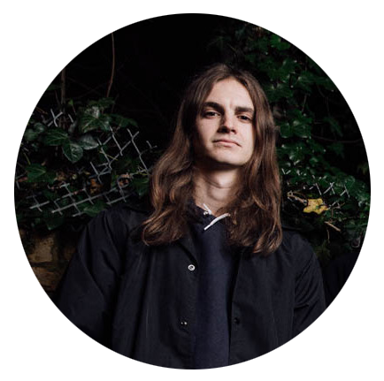

Oliver Sykes
Lead Member since 2004
Oliver "Oli" Sykes is a well know English singer and song writter as he is the lead vocalist for BMTH. He is created his own clothing line called Drop Dead Clothing and created a graphic novel in his spare time
Jordan Fish
Keyboard Instrumentalist since 2012
Joined in early 2013 and help develop the sound and music style for BMTH's album called 'Sempiternal' which had a big influence on the music style of the band from the point forward.
Lee Malia
Lead Guitarist since 2004
Lee has three guitars created for him by Epiphone located in Germany. Before he became a part of BMTH he was firt part of a band that was a Metallica tribute.
Mat Nicholls
Percussionist since 2004
Matt has a love for Dinosaurs and his favorite movie is Jurrasic World. He is also an advid sports fan as he said that he enjoys watching wresting the most.

Curtis Ward
Rhythm Guitarist since 2004 to 2009
Ex-Guitarist for BMTH and later joined a banded called Counting Days. Curtis Ward help play albums like 'Count Yoour Blessings' and 'Suicide Season'. He quit the band to make his own but couldn't find people dedicated so he joined another.
Matt Kean
Bass Player since 2004
He was the only Vegan of the band so they gave him the nickname "vegan". He is a musician from Australia and joined BMTH when he met Oliver
Jona Weinhofen
Rhyth Guitarist since 2009 to 2013
Before he joined BMTH he was a part of a band called 'I killed the Prom Queen' in 2000 but in 2009 he replaced EX-Guitarist Curtis Ward. He was featured in the music video "The Sadness Will Never End" after Ward's departure.